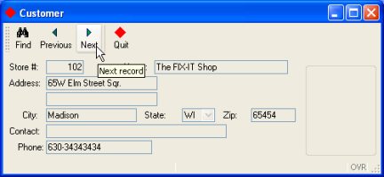
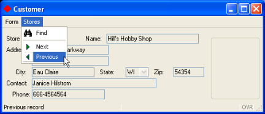
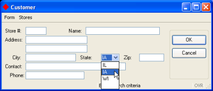

Summary:
You can change the way that program options are displayed in a form in a variety of ways. This example program illustrates some of the simple changes that can be made:
The program also illustrates some of the Genero BDL action defaults that standardize the presentation of common actions.

Display on Windows platforms
The TOOLBAR section of a form specification file defines a Toolbar with buttons that are bound to actions. A Toolbar definition can contain the following elements:
Values can be assigned to TEXT, COMMENT, and IMAGE attributes for each item in the Toolbar.
The TOOLBAR commands are enabled by actionsdefined by the current interactive BDL instruction, which in our example is the MENU statement in the custquery.4gl module. When a Toolbar button is selected by the user, the program triggers the actionto which the Toolbar button is bound.
This TOOLBAR will display buttons for find, next, previous, and quit actions.
| Form (custform.per) |
|
04 The ITEM command-identifier find will be bound to the MENU
statement action find on line
14 in the custmain.4gl file
shown below. The word find must be identical in both the TOOLBAR
ITEM and the MENU
statement action, and must always be in lower-case. The other command-identifiers are
similarly bound. 08
Although attributes such as TEXT or COMMENT are defined for the ITEM quit,
the ITEMS find, previous, and next do not have any
attributes defined in the form specification file. These actions are common actions that have
default attributes defined in the action defaults file.The same options that were displayed to the user as a TOOLBAR can also be defined as buttons on a pull-down menu ( a TOPMENU). To change the presentation of the menu options to the user, simply modify and recompile the form specification file.

Display on Windows platforms
The TOPMENU section of the form specification allows you to design the pull-down menu. The TOPMENU section must appear after SCHEMA, and must contain a tree of GROUP elements that define the pull-down menu. The GROUP TEXT value is the title for the pull-down menu group.
A GROUP can contain the following elements:
Values can be assigned to attributes such as TEXT, COMMENT, and IMAGE. for each item in the TOPMENU.
As in a Toolbar, the TOPMENU commands are enabled by actions defined by the current interactive BDL instruction (dialog), which in our example is the MENU statement in the custquery.4gl module. When a TOPMENU option is selected by the user, the program triggers the action to which the TOPMENU command is bound.
| Form custform.per |
|
04 and 07
This example TOPMENU
will consist of two groups on the menu bar of the form. The TEXT
displayed on the menu bar for the first group will be Form, and the second group will be
Stores.08 to 14:
Under the menu bar item Stores, the command-identifier find on line 05 will be bound to the
MENU
statement action find on line 14 in the custmain.4gl file shown below. The word
find must be
identical (including case) in both the TOPMENU
command and the MENU
statement
action. The other command-identifiers are similarly
bound.The revised form specification file must be re-compiled before it can be used in the program.
In this example application the only valid values for the state column of the database table customer are IL, IA, and WI. The form item used to display the state field can be changed to a COMBOBOX displaying a dropdown list of valid state values. The COMBOBOX is active during an INPUT, INPUT ARRAY, or CONSTRUCT statement, allowing the user to select a value for the state field.

Display on Windows platforms
The values of the list are defined by the ITEMS attribute:
COMBOBOX f6=customer.state, ITEMS = ("IL", "IA", "WI");
In this example, the value displayed on the form and the real value (the value to be stored in the program variable corresponding to the form field) are the same. You can choose to define different display and real values; in the following example, the values Paris, Madrid, and London would be displayed to the user, but the value stored in the corresponding program variable would be 1, 2, or 3:
COMBOBOX f9 = formonly.cities, ITEMS = ((1,"Paris"),(2,"Madrid"),(3,"London"));
Although the list of values for the COMBOBOX is contained in the form specification file in this example program, you could also set the INITIALIZER attribute to define a function that will provide the values. The initialization function would be invoked at runtime when the form is loaded, to fill the COMBOBOX item list dynamically with database records, for example.
See form file item-types for a complete list of the item types that can be used on a form.
Genero provides attributes that can be used to customize the appearance of windows, forms, and form objects in your application. In addition, you can create Presentation Styles to standardize the appearance of window and form objects across applications.
Some of the simple changes that you can make are:
The default title for a window is the name of the object in the OPEN WINDOW statement. For example, in the programs we've seen so far, the title of the window is w1:
OPEN WINDOW w1 WITH FORM "custform"
In the form specification file, the attribute TEXT of the LAYOUT section can be used to change the title of the parent window:
LAYOUT (TEXT="Customer")
The Genero runtime system provides built-in classes, or object templates, which contain methods, or functions, that you can call from your programs. The classes are grouped together into packages. One package, ui, contains the "Interface" class, allowing you to manipulate the user interface. For example, the setImage method can be used to set the default icon for the windows of your program. You may simply call the method, prefixing it with the package name and class name; you do not need to create an Interface object.
CALL ui.Interface.setImage("imagename")
By default windows are displayed as normal application windows, but you can choose a specific style using the WINDOWSTYLE attribute of the LAYOUT section of the form file. The default window styles are defined as a set of attributes in an external file (default.4st).
LAYOUT (WINDOWSTYLE="dialog")
| Form custform.per |
|
18, the title of the window is set to Customer.
Since this is a normal application window, the default window style is
used.40, a COMBOBOX
is substituted for a simple Edit form field.35 and
41 The REQUIRED
attribute forces the user to enter or select a value for this field
when a new record is being added. See the attributes
list for a complete list of the attributes that can be defined for a form
field.Changing the icon for the application windows:
| Module custmain.4gl |
|
11 For convenience, the image used is the
smiley image
from the pics directory, which is the default image directory of the Genero Desktop Client.In the example in the previous lesson, if the user clicks the Next or Previous buttons on the application form without first querying successfully, a message displays and no action is taken. You can disable and enable the actions instead, providing visual cues to the user when the actions are not available. The ui.Dialog built-in class provides an interface to the BDL interactive dialog statements, such as CONSTRUCT and MENU. The method setActionActive enables and disables actions. To call a method of this class, use the pre-defined DIALOG object within the interactive instruction block.
For example:
MENU
BEFORE MENU
CALL DIALOG.setActionActive("actionname" , state)
...
END MENU
where actionname is the name of the action, state is an integer, 0 (disable) or 1 (enable).
You must be within an interactive instruction in order to use the DIALOG object in your program, but you can pass the object to a function. Using this technique, you could create a function that enables/disables an action, and call the function from the MENU statement, for example. See ui.Dialog for further information.
In Genero applications, when the user clicks the X button in the upper-right corner of the application window, a predefined close action is sent to the program. What happens next depends on the interactive dialog statement:
You can change this default behavior by overwriting the close action within the interactive statement. For example, to exit the MENU statement when the user clicks this button:
MENU
...
ON ACTION close
EXIT MENU
END MENU
By default the action view for the close action is hidden and does not display on the form.
| Module custmain.4gl |
|
Notes:
08 The icon for the application
windows is set to the "exit" image.15, 16
Before the menu is first displayed, the next and previous
actions are disabled.18, 19
Before the query_cust function is executed the next and previous
actions are disabled21 thru 24 If the query was successful
the next and previous actions are enabled.31 The close action is included in the
menu, although an action view won't display on the form. If the user
clicks the X button in the top right of the window, the action on line 32, EXIT MENU, will be taken.The Genero BDL runtime system includes an XML file, default.4ad, in the lib subdirectory of the installation directory FGLDIR, that defines presentation attributes for some commonly used actions. If you match the action names used in this file exactly when you define your action views (TOOLBAR or TOPMENU items, buttons, etc.) in the form specification file, the presentation attributes defined for this action will be used. All action names must be in lower-case.
For example, the following line in the default.4ad file:
<ActionDefault name="find" text="Find"
image="find" comment="Search" />
defines presentation attributes for a find action- the text to be displayed on the action view find defined in the form, the image file to be used as the icon for the action view, and the comment to be associated with the action view. The attribute values are case-sensitive,so the action name in the form specification file must be "find", not "Find".
The following line in the default.4ad file defines presentation attributes for the pre-defined action cancel. An accelerator key is assigned as an alternate means of invoking the action:
<ActionDefault name="cancel" text="Cancel"
acceleratorName="Escape" />
You can override a default presentation attribute in your program. For example, by specifying a TEXT attribute for the action find in the form specification file, the default TEXT value of "Find " will be replaced with the value "Looking".
03TOPMENU04... 07GROUP stores (TEXT="Stores")08COMMAND find (TEXT="Looking")
You can create your own .4ad file to standardize the presentation attributes for all the common actions used by your application. See Action Defaults for additional details.
The attributes of the action views for the MENU actions in the custmain.4gl example will be determined as shown in the table below. Attributes defined in the form specification file override attributes defined in the .4ad file.
| Action | From the form specification file |
From the default.4ad file | From the MENU statement in the .4gl file |
| find | No attributes listed | TEXT="Find" IMAGE="find" COMMENT="Search" |
Over-ridden by default.4ad |
| next | No attributes listed | TEXT="Next" IMAGE="goforw" COMMENT="Next record" |
Over-ridden by default.4ad |
| previous | No attributes listed | TEXT="Previous" IMAGE="gorev" COMMENT="Previous record" |
Over-ridden by default.4ad |
| close | Not listed in the form file | attributes are listed in default.4ad but the action view is not displayed on form by default | Over-ridden by default.4ad (pre-defined action) |
| quit | For both TOPMENU and TOOLBAR, the action view has the attributes TEXT="Quit", COMMENT="Exit the program", IMAGE="exit". |
Action is not listed in the file | Over-ridden by the form specification file. |
| *accept | Not listed in the form file. | TEXT="OK" AcceleratorName="Return" AcceleratorName2="Enter" |
This action is not defined in a MENU instruction (pre-defined action.) |
| *cancel | Not listed in the form file. | TEXT="Cancel" AcceleratorName="Escape" |
This action is not defined in a MENU instruction (pre-defined action.) |
* The pre-defined actions accept and cancel do not have action views defined in the form specification file; by default, they appear on this form as buttons in the righthand section of the form when the CONSTRUCT statement is active. Their attributes are taken from the default.4ad file.
The image files specified in these definitions are among the files provided with the Genero Desktop Client, in the pics subdirectory.